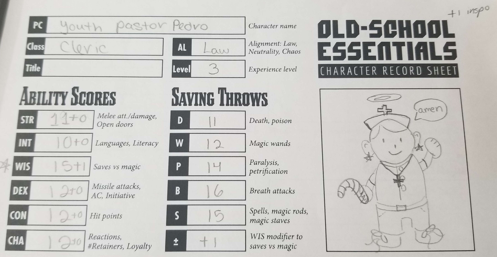

2nd anniversary
08.dec.23
i recently celebrated my 2nd anniversary with my beloved boyfriend  we ate at this very expensive asian restaurant. it was sooooo good!!!!!
we ate at this very expensive asian restaurant. it was sooooo good!!!!!
here's some sushi we ordered with a side of tostones
i think the translation of that would be fried plantains...? not sure lol

for the main plate i ordered some teriyaki beef (it was so tender!!) with fried rice and vegetables. for dessert i ordered a fried ice cream... which i forgot to take a picture of. but it was really good as well. i've never eaten so much before.
the next day, we went to participate in a d&d club. the dungeon master was hosting a christmas themed d&d game. i was a bit nervous because i've never played a game of d&d but the dm was very chill and it turned out pretty fun though we didn't manage to finish the campaign 

i doodled my character while waiting for others to finish with theirs. my character turned out to be a cleric my rolling my stats and all that so i made them into a 'cool' youth pastor.
about my last journal entry... i am actually writing this log in VS code... despite me complaining last time, i still want to learn how to use this coder! i still prefer brackets i'm pretty sure... but it's nice to have options.
i also DID manage to install a git extension to brackets.io as well and learned how to use it! but at the end of the day i prefer to use github desktop for pushing commits and that sort of thing. which is GREAT because now i have access to my branches on brackets.io :) besties, we are learning so much.
tired from this MIGRAINE i've been having for days
fortnite lego
im hungry so i'm about to make some fries and ramen
learning about github
01.dec.23
OK SO.... i've been doing some stuff behind the scenes so my process of uploading the code to neocities would be wayyyyy smoother going forward!
i had been meaning to figure out how to deploy to neocities via github using miss moss's template! and finally stop updating my website by just copy + pasting code into the neocities built-in code editor.
i had known this was a thing for quite a while but never got around to do it because github marked my account as SPAM for some reason..... i stopped procrastinating contacting github support and they actually got to me pretty fast :) now with my account back to normal i managed to get deploy to neocities up and running!
i was (well still am...) pretty new to github and all of that jazz to it took me a bit to set it up even with the template but despite everything, it was pretty easy! i've uploaded my entire site already and even pushed my december listening log update with it! it really makes things soooooo much easier as someone who would lose track of what i had already uploaded pretty easily.
since i got that done, i've been taking my time exploring github and all the things i can do with it.
i went into youtube and looked up some tutorials! i stumbled upon a video called Git and GitHub for Beginners - Crash Course and i've been learning a bit from that!
for some context: i use brackets.io as my code editor and then used github desktop to push my changes into the repository. through that video, i also found out that i can do that with visual studio code and git.
i downloaded both of those programs to check it out and made a repository on github just to mess around with it. i think it's very nice how you can push changes directly through VSC (as long as you have git installed as well) BUT i have a bit of a problem....
i understand VSC has like Way More compared to brackets but wow.... going through VSC genuinely gave me a bit of headache because there is just SO much stuff in here.
one of my main issues is that i cant find a way on how to switch between folders (or workspaces i guess?) that isn't through file > open folder... and selecting the folder every time i want to work on it.
i tried downloading an extension for it but i couldn't get it working at the end, i couldn't get it to work... so far this is my biggest pet peeve or whatever 
i really like the simplicity of brackets. so i think i will stick to brackets and github desktop in the meantime 
anyway... this whole convo started because of that youtube video. i'm still not even half way through the video btw  but i will finish it throughout this week!
but i will finish it throughout this week!
i've been so focused into this github thing that i havent touched v3 of the homepage in a bit! but i will get to it soon!
though, i also want to write my 2023 music recap with my top songs of this year... but that will depend on what my brain wants to focus on at that given moment 
my online friends suffering in overwatch comp
tired, i walked 2.2 miles today!